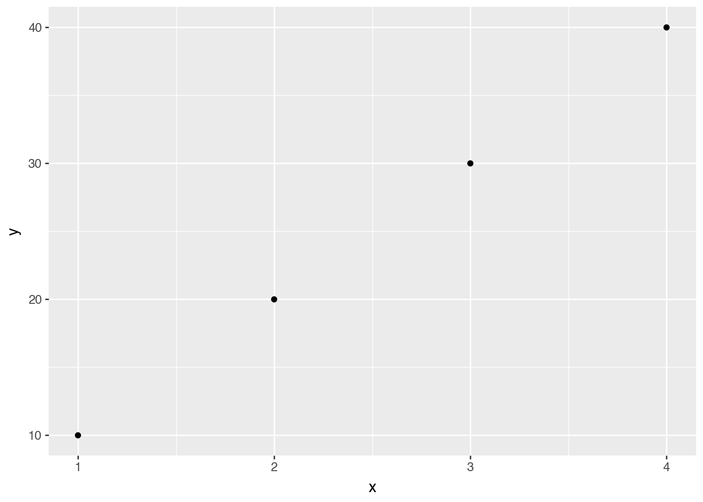

![]()
Code
14625701.09414688Workshop on Reproducible Writing
⏰ 10 minutes
Good understanding of reproducibility from a quantitative perspective.
Less well defined from a qualitative perspective.
Good paper from FORTT

Some examples:
This presentation was done in Quarto. 😃
You can produce HTML reports such as this one.
Other examples: https://quarto.org/docs/gallery/
👁️🗨️ If you want to look at the code for these examples, click on the </> icon.

YAML: “YAML is a human-readable data serialization language that is often used for writing configuration files. It contains the metadata (title, tags, and descriptions) for the document.Main Body: Text, which may include in-line code, written in markdown (plain text formatting) syntax.Code Chunks: Code in different languages (depending on what you have installed on your computer) that can be executed when the document is rendered.Follow these steps:
File > New Project > New Directory > Quarto Project > Name your Directory and click on Create git repository > Create Project.Render to test that the most basic Quarto document renders on your computer.<filename>.html file in your local folder. Open it in your Web Browser.Be careful with the indentation!
Let’s add: title, author, and date.
⏰ 2 minutes
---
title: "Reproducible Report Example"
author: Your name
date: 2023/08/03
format: gfm
---It depends on the format you want to work in:
## Introduction
This is a Quarto document. To learn more about Quarto see <https://quarto.org>.
Another way to create links is to use: [a label with a link](https://quarto.org)🤓 Go through this tutorial to learn markdown in a fun, interactive way!
Here we call the Python `mean()` function
The function’s output is included immediately below the code.
How much do you want to see?
#| echo: true
#| code-fold: true
(Will discuss plots more next week)

Use the pandas function to print tables as HTML:
| id | imdb_id | popularity | budget | revenue | original_title | cast | homepage | director | tagline | ... | overview | runtime | genres | production_companies | release_date | vote_count | vote_average | release_year | budget_adj | revenue_adj | |
|---|---|---|---|---|---|---|---|---|---|---|---|---|---|---|---|---|---|---|---|---|---|
| 0 | 135397 | tt0369610 | 32.985763 | 150000000 | 1513528810 | Jurassic World | Chris Pratt|Bryce Dallas Howard|Irrfan Khan|Vi... | http://www.jurassicworld.com/ | Colin Trevorrow | The park is open. | ... | Twenty-two years after the events of Jurassic ... | 124 | Action|Adventure|Science Fiction|Thriller | Universal Studios|Amblin Entertainment|Legenda... | 6/9/15 | 5562 | 6.5 | 2015 | 1.379999e+08 | 1.392446e+09 |
| 1 | 76341 | tt1392190 | 28.419936 | 150000000 | 378436354 | Mad Max: Fury Road | Tom Hardy|Charlize Theron|Hugh Keays-Byrne|Nic... | http://www.madmaxmovie.com/ | George Miller | What a Lovely Day. | ... | An apocalyptic story set in the furthest reach... | 120 | Action|Adventure|Science Fiction|Thriller | Village Roadshow Pictures|Kennedy Miller Produ... | 5/13/15 | 6185 | 7.1 | 2015 | 1.379999e+08 | 3.481613e+08 |
| 2 | 262500 | tt2908446 | 13.112507 | 110000000 | 295238201 | Insurgent | Shailene Woodley|Theo James|Kate Winslet|Ansel... | http://www.thedivergentseries.movie/#insurgent | Robert Schwentke | One Choice Can Destroy You | ... | Beatrice Prior must confront her inner demons ... | 119 | Adventure|Science Fiction|Thriller | Summit Entertainment|Mandeville Films|Red Wago... | 3/18/15 | 2480 | 6.3 | 2015 | 1.012000e+08 | 2.716190e+08 |
| 3 | 140607 | tt2488496 | 11.173104 | 200000000 | 2068178225 | Star Wars: The Force Awakens | Harrison Ford|Mark Hamill|Carrie Fisher|Adam D... | http://www.starwars.com/films/star-wars-episod... | J.J. Abrams | Every generation has a story. | ... | Thirty years after defeating the Galactic Empi... | 136 | Action|Adventure|Science Fiction|Fantasy | Lucasfilm|Truenorth Productions|Bad Robot | 12/15/15 | 5292 | 7.5 | 2015 | 1.839999e+08 | 1.902723e+09 |
| 4 | 168259 | tt2820852 | 9.335014 | 190000000 | 1506249360 | Furious 7 | Vin Diesel|Paul Walker|Jason Statham|Michelle ... | http://www.furious7.com/ | James Wan | Vengeance Hits Home | ... | Deckard Shaw seeks revenge against Dominic Tor... | 137 | Action|Crime|Thriller | Universal Pictures|Original Film|Media Rights ... | 4/1/15 | 2947 | 7.3 | 2015 | 1.747999e+08 | 1.385749e+09 |
5 rows × 21 columns
You can also include LaTeX math:
$$ P\left(A=2\middle|\frac{A^2}{B}>4\right) $$
\[ P\left(A=2\middle|\frac{A^2}{B}>4\right) \]
This is the list of articles we’ll use:
The easiest way to do this is maintaining a .bib file. You can create it using Zotero, or you can create it manually using https://www.doi2bib.org/.
<filename>.bib in the same project folder.You are about to start an interdisciplinary project with 5 collaborators. They are from different areas of expertise, a couple of them are from different countries. You want to keep working with a reproducible workflow, but you know most of them are not proficient in some of the tools you use.
Q1. How/when do you negotiate which tools you are going to use to work on the project? Which factors do you need to take into account when deciding which tools to use?
–
Q2. When and how would you discuss the author contributions in the paper? You can use this as a guide: https://credit.niso.org/
–
Q3. How/when should you decide which journals do you want to publish in?
Marcela Alfaro Córdoba, Ph.D.
–
Bianca Peterson, Ph.D.
https://binxiepeterson.github.io/
–
Hugh Shanahan